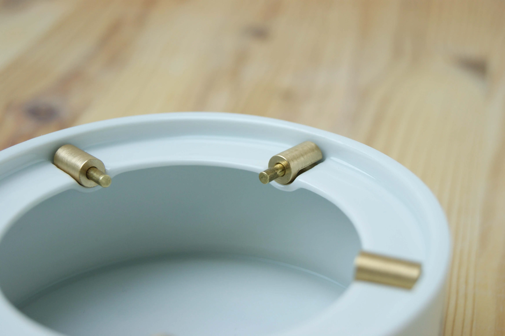
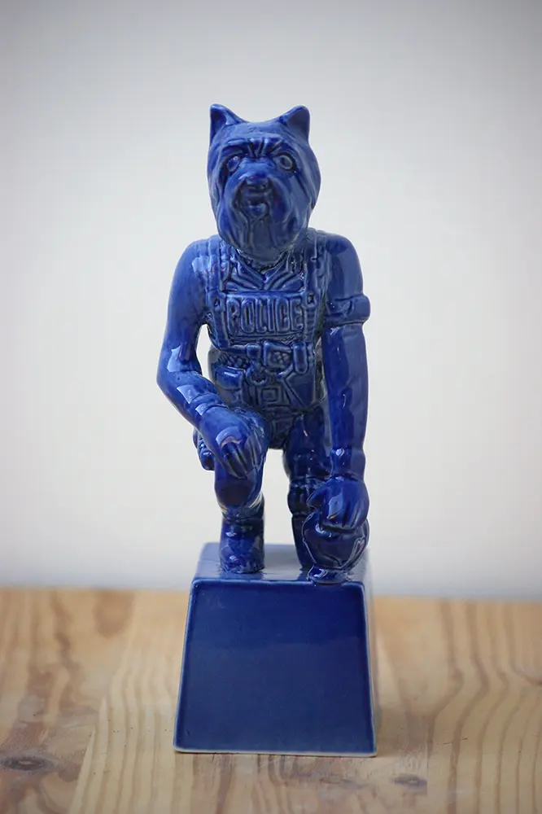
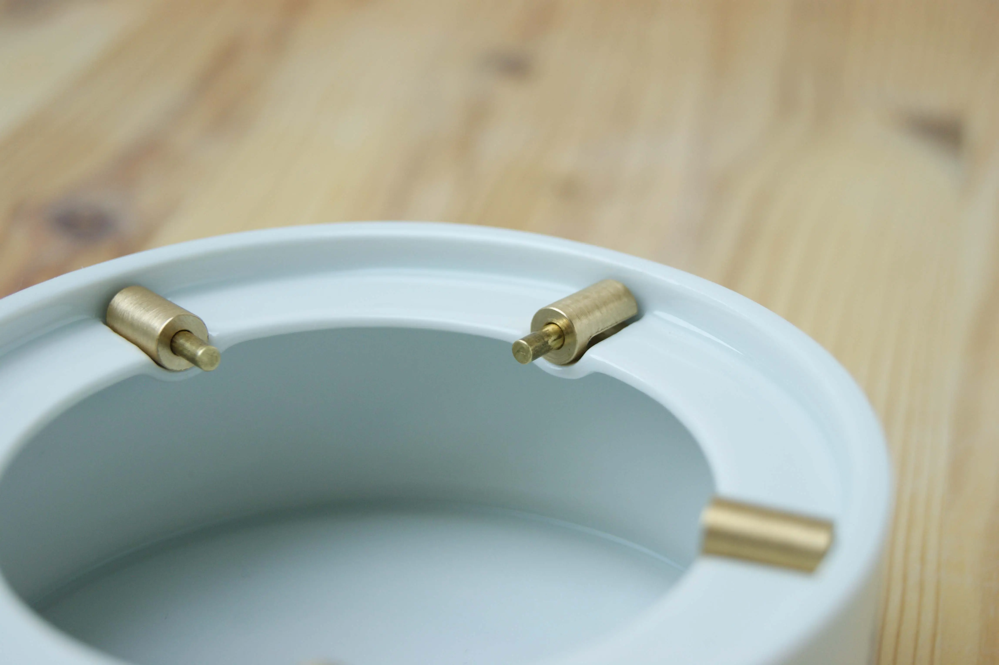
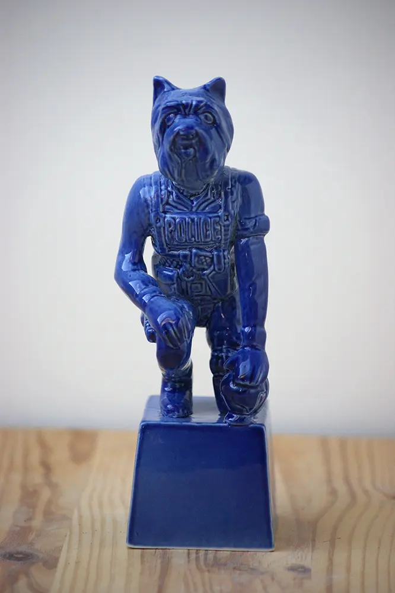

This project focuses on the human need to preserve confidentiality and
the associated ownership of inaccessible places. The outcome is a
collection of porcelain boxes in different forms with specific features
and thanks to them they can be called “secret”. A set of boxes consists
of two jars with unique latching system - a bottomless vase and a statue
of the guardian.
See how it works HERE
 


